Authoring interactive immersive scenes for healthcare training and patient education today requires sustained collaboration between developers, 3D-modeling artists, and clinicians, putting immersive medical visualization out of reach for most domain experts. We present an LLM-based multi-module agent that turns a single natural-language description into a fully populated, interactive VR scene, lowering the authoring barrier from code and 3D tooling to natural language commands.
A closed loop between a Python reasoning core and a Unity runtime combines a frontier-LLM planner with lightweight VLM critics grounded in three orthogonal screenshots. A separate interaction layer compiles affordances and story logic into a JSON so runtime response is LLM-free. Across fifteen diverse healthcare scenarios (45 trials), the agent recovers the correct object set in every scene at 5.1 frontier-LLM calls and 113 s per trial, and generates coherent multi-beat story lines averaging 5.0 beats per scenario.
Generates complex VR scenes and per-object interaction logic from natural-language user experience descriptions alone.
Decomposes high-level instructions into structured plans and executable actions, with closed-loop reflection for adaptive behavior.
Emergency, ICU, surgical, dental, ophthalmology, radiology, maternity, lab, and cosmetic scenes, each run for three independent trials.
A Python reasoning core and a Unity runtime iteratively plan, execute, reflect, and revise until the scene is bounded, collision-free, physically plausible, and semantically coherent.
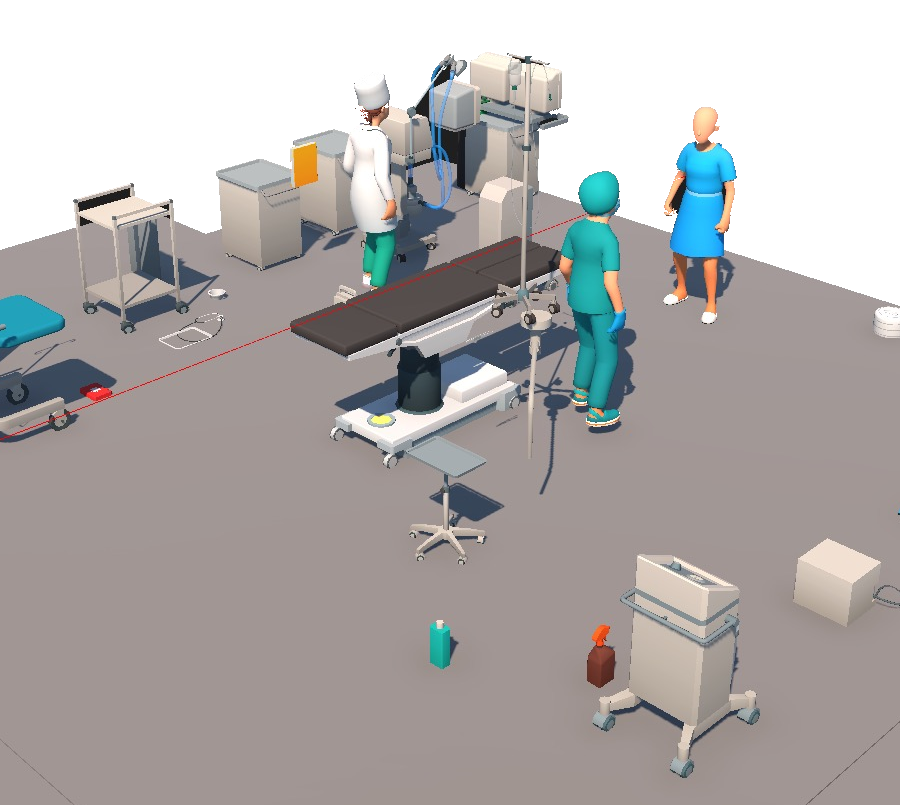
A fully populated, interactive Unity scene generated from the single sentence above — no object list, coordinates, or room configuration supplied.
Plan quality determines scene quality — an incorrect object list cannot be repaired by downstream reflection. Reflection and per-step decisions, by contrast, are high-frequency and benefit from iteration speed rather than reasoning depth.
Scene synthesis, interaction-map generation, and story-line generation (gpt-5.4-mini).
Placement loop and VLM-backed reflection threads (Llama-4-Scout-17B via Groq), closing the feedback loop in seconds.
Outputs an object list (typed prefab references with role tags), a layout (3D anchors, surface hints, clearance budgets), and an interaction map, persisted as plan.json.
Long-term memory and tool index: asset catalog, authoring rules, execution logs, action map, and reusable skills — injected directly or retrieved from a vector store.
Fuses plan, environment, object, and user status into PlaceObject, MoveObject, DeleteObject, animation and lighting commands, validated against the action map.
Five specialized threads run in parallel over the live scene_state.json and three orthogonal screenshots (plane_xy, plane_xz, plane_yz). Each pairs a deterministic checker with, where useful, a lightweight VLM, so every LLM verdict is corroborated numerically.
Keeps every object inside the room footprint.
move iv_stand → clamp to wall
Removes geometric overlap between placed objects.
move trolley → clear of op_table
Flags floating or unsupported objects.
move monitor → onto cart (y)
Verifies support and containment relationships.
move scalpel → instrument_table
Ensures every human role in the description is present.
add surgeon → beside op_table
Correction lines shown are illustrative examples of each thread's output format.
The frontier LLM emits two JSON artifacts up front. After generation, the Unity runtime services user input against both without further LLM calls, enabling real-time feedback.
Rows are scene entities, columns are typed action primitives (gaze, grab, release, touch). Each cell holds the deterministic response — a dialogue line, animation, or state transition. Keyed on role tags, so the same prefab can expose different affordances across scenarios.
An ordered chain of beats, each binding a target object, a required user action, and a sequence of Unity actions. Beats are strictly sequential: the next one unlocks only after the current trigger fires.
Click any cell to perform that action on that entity. Every input is matched twice in parallel: against the interaction map for the per-object response (which always fires), and against the active beat to drive the story. The pulsing cell is the active beat's trigger.
Illustrative example extending the paper's “Bring the supply trolley to the surgeon” chain; dialogue lines are not from a generated trial.
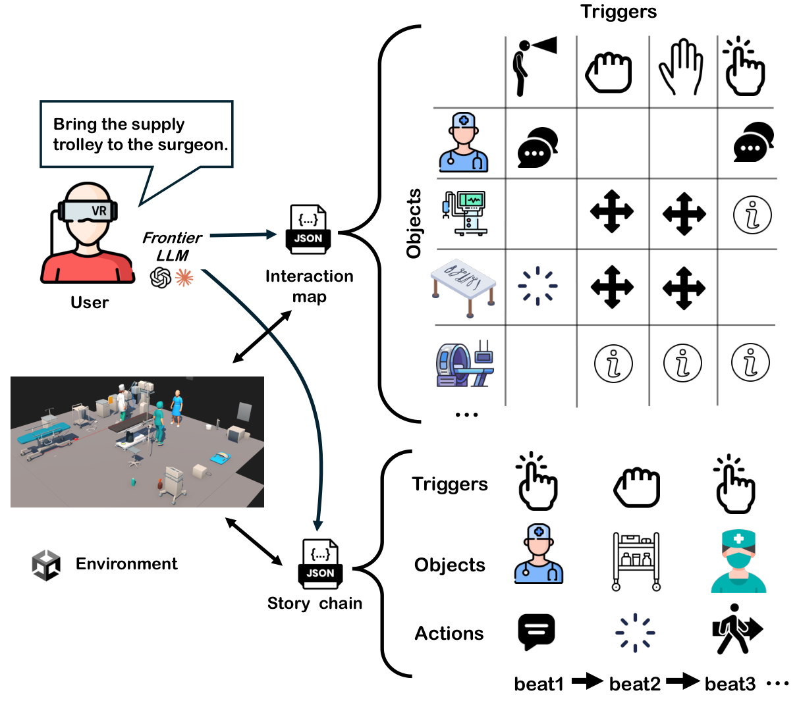
Figure 2. Interaction pipeline. The frontier LLM emits an Interaction map of per-object action affordances over a small set of typed primitives, and a Story line of strictly sequential trigger steps, each binding a target object, the required user action, and the response the runtime emits on success.
Generated scenes across five specialties, and runtime interactions captured during user play sessions.
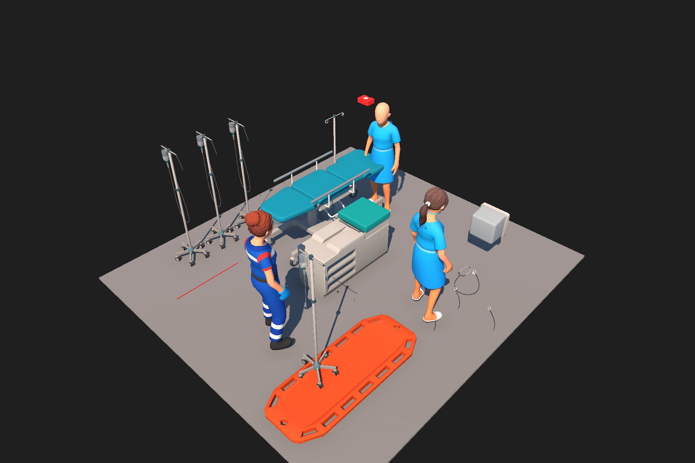
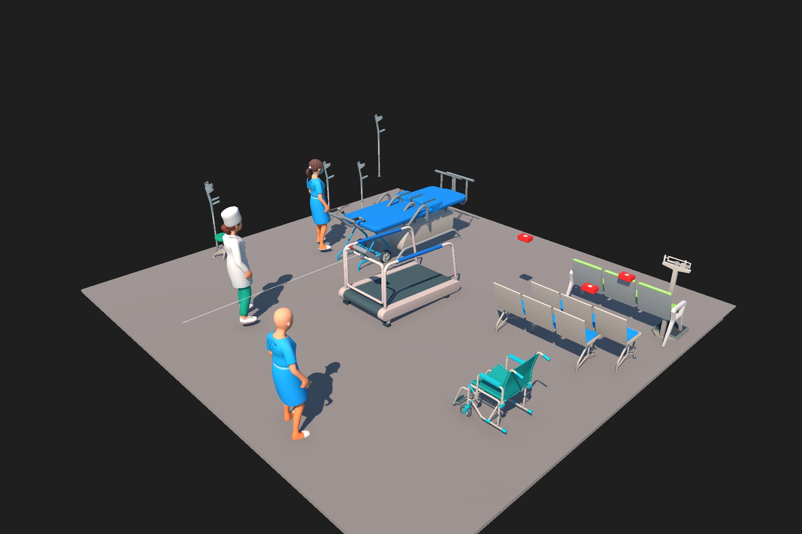
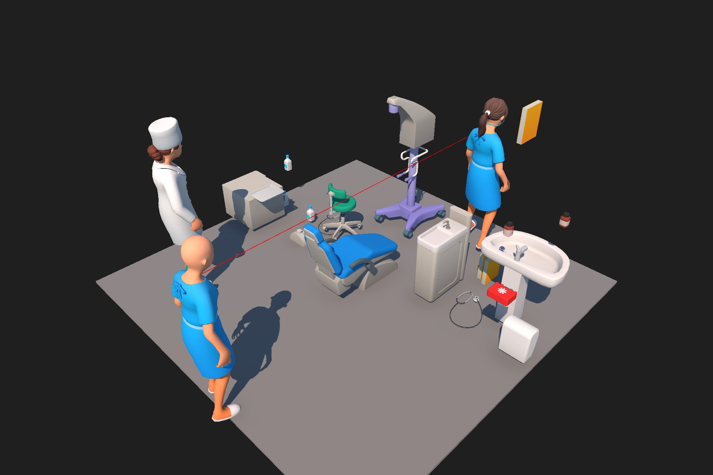
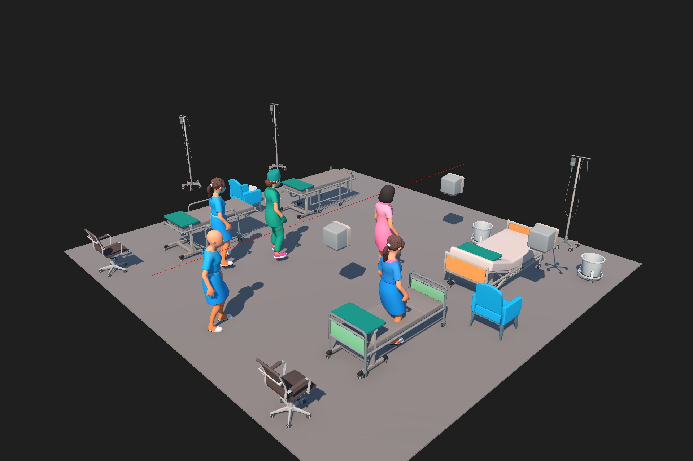
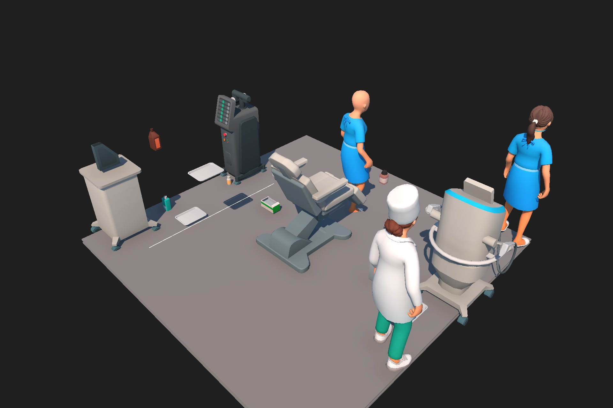
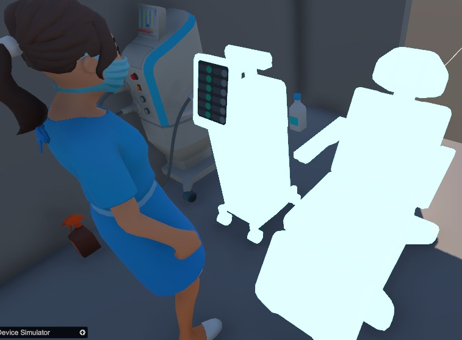
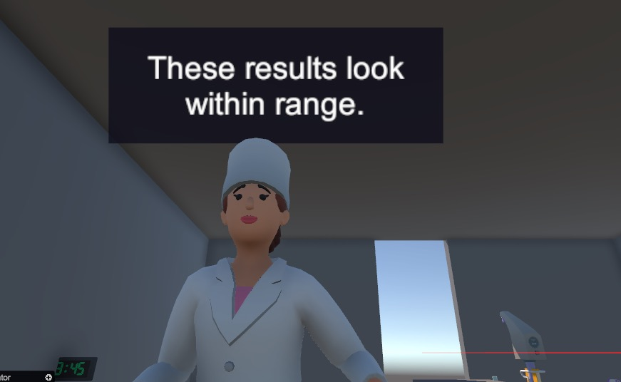
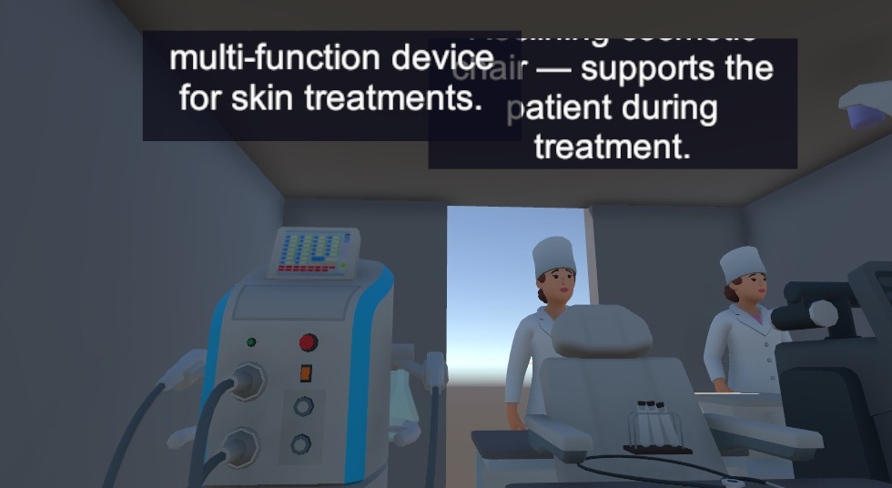
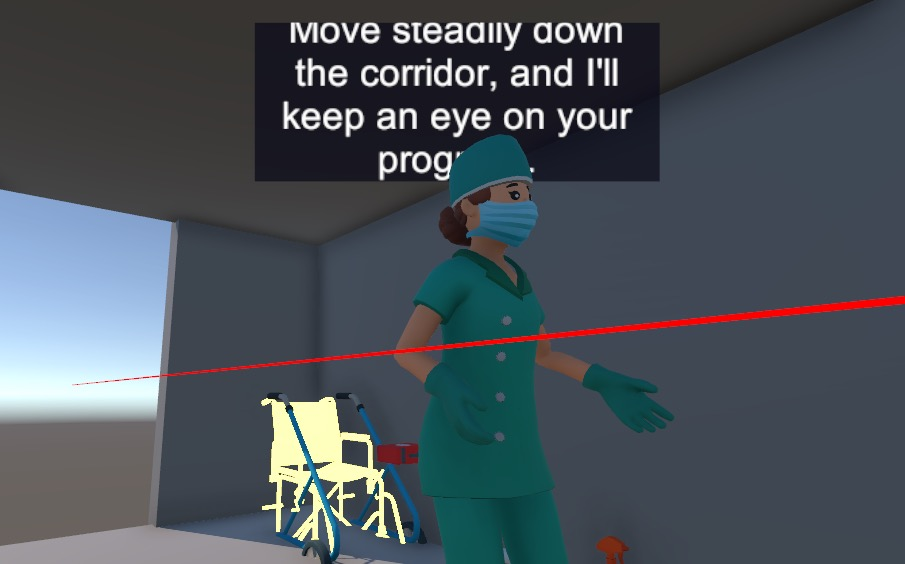
Fifteen healthcare-VR scenarios (S01–S15), three trials each, drawn from a shared library of 440 medical-equipment and 24 character prefabs. Each scenario is supplied only as a free-form narrative.
LLM-as-judge ratings (1–5) split sharply: coherence averages 4.16 while spatial reasoning averages only 2.71. Semantic object retrieval is the simpler task; dense spatial layout is the bottleneck.
Open scenarios such as S01 and S03 close every plan step; the densest setups (S04 surgery prep, S07 supply closet) repeatedly hit the three-iteration reflection cap. Click a column to sort.
| Scenario | Coll % | Plan % | LLM | Time (s) | Coh | Spat |
|---|---|---|---|---|---|---|
| Average | 3.3 | 73.9 | 5.1 | 113 | 4.16 | 2.71 |
Coll = collision rate; Plan = step-completion rate; LLM = frontier-LLM calls per trial; Time = Phase-1 wall-clock per trial; Coh, Spat = LLM-as-judge coherence and spatial scores (1–5). Means over n=3 trials.
Story lines average 5.0 beats (range 4.0–6.7), each dispatching 3.5 Unity actions. The only narrative score below 3.0 is S07, the one scenario without characters.
| Scenario | AmbCov | Beats | Acts/B | ObjInf | Narr |
|---|---|---|---|---|---|
| Average | 0.64 | 5.0 | 3.50 | 3.87 | 3.67 |
AmbCov = fraction of placed objects with at least one interaction binding; Beats = mean story-line length; Acts/B = Unity actions per beat; ObjInf, Narr = LLM-as-judge object-informativeness and narrative-coherence scores (1–5).
@inproceedings{chen2026description,
author = {Chen, Rongqian and Andreyev, Allison and Wang, Xuan and Jiang, Jianan and Li, Bin and Lan, Tian},
title = {From Description to Interactive VR Scene: An LLM Agent for Authoring Immersive Experiences},
booktitle = {IEEE Visualization and Visual Analytics (VIS)},
year = {2026}
}